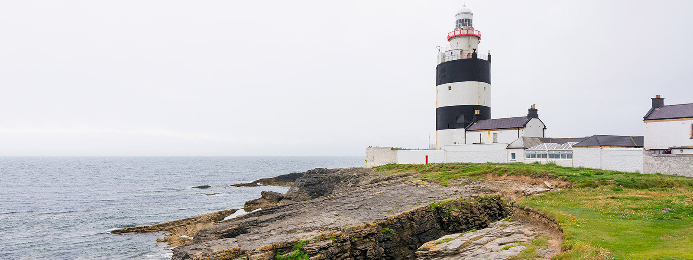
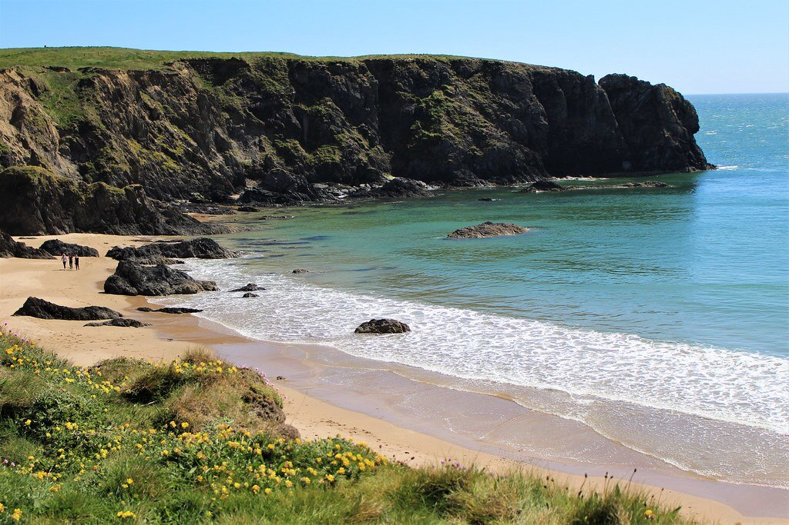
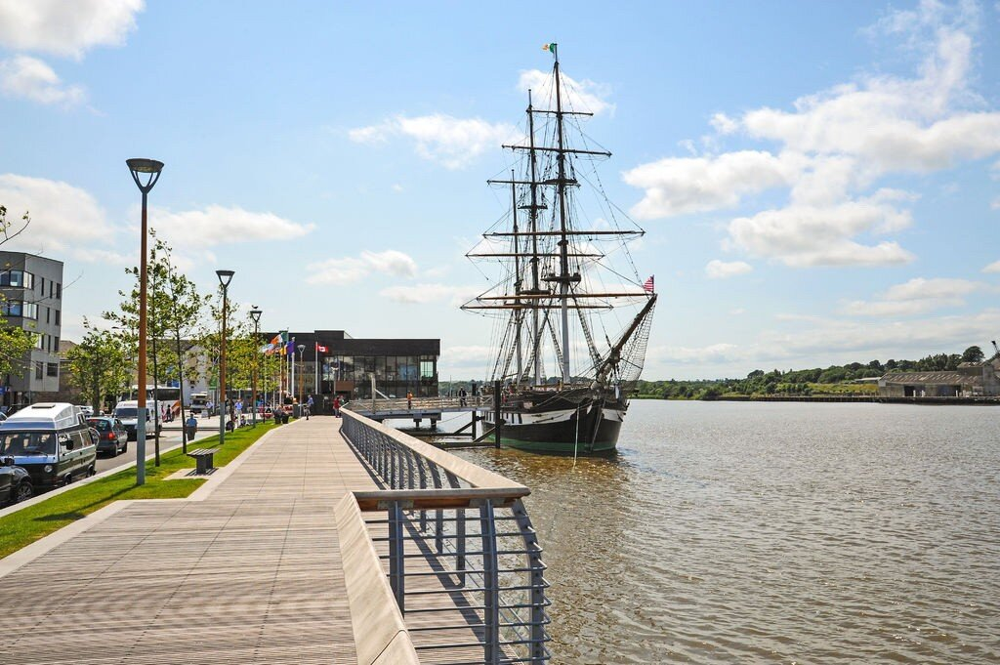

Region
Fruit Hill is located in Ireland’s South-East, where ancient history and modern life meet. Enjoy memorable food experiences, wander down the cobbled streets of medieval towns, and explore the gorgeous gardens of this scenic region.

Reading through the visitors’ book you will see that Hook Lighthouse is universally recommended. A half hour’s drive from Fruit Hill, the winding route to Europe’s oldest lighthouse is picturesque and interesting. Every age group will enjoy the tour of this historic building with its dramatic backdrop of rocky seascape. Slade village, Duncannon Fort and Loftus Hall are worth a visit too, and there is an excellent visitors’ centre and cafe at the Hook. There are 14 beautiful sandy beaches around the Peninsula, and at certain times of year you can see dolphins and whales swimming out at sea. Horse riding on the strand is an option in Fethard on Sea (one of several in this horse-loving county).


Follow the Wexford coastal drive and stop off at pretty Kilmore Quay with its thatched cottages and excellent sea food restaurants. Wexford town has a famous Opera House, and is a nice place for a stroll and some shopping. Fine foods and art exhibitions at Green Acres or the Wexford Arts Centre. Johnstown Castle is open to visitors, and the Irish National Heritage Park just outside Wexford is another popular place to visit, especially with children. Probably the biggest hit is the tour of Dunbrody Heritage Ship. This is in nearby New Ross, and everyone will enjoy exploring the reconstructed famine ship with guides in costume to give a flavour of what life was like on board during the six-week crossing to America in the 19th Century.